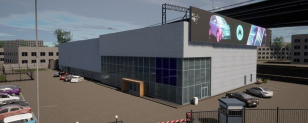
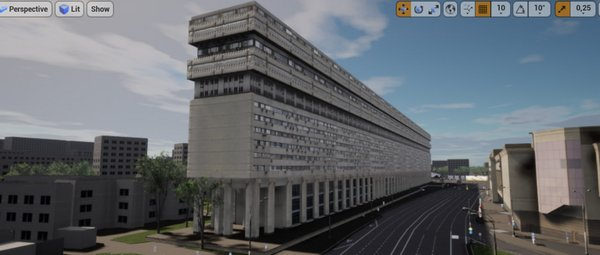
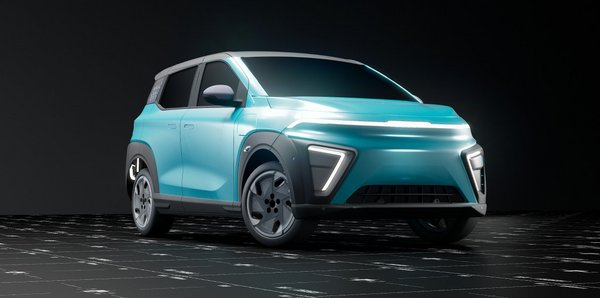
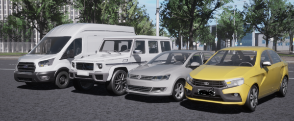

UE Vehicle Builder
Automated conversion of DCC source assets into standardized Unreal Engine vehicle packages, including repeatable setup and validation.
~60 min → ~1 min
Packaging time per vehicle workflow.
Validation / tooling video ↗I define production architecture, data flows, integrations, automation, validation and recovery for teams working across Unreal Engine, DCC tools and large production datasets. Domain specialists own asset execution; I design the technical system around their work.
Selected pipeline work focused on reducing repetitive setup, enforcing standards and making technical workflows easier to operate at team scale.
Automated conversion of DCC source assets into standardized Unreal Engine vehicle packages, including repeatable setup and validation.
Packaging time per vehicle workflow.
Validation / tooling video ↗Production platform for centralized tool distribution, updates, source-data preparation, workflow automation and recovery for a digital-twin team.
Current rollout scale.
Evaluation of AI-assisted modeling workflows through geometry quality, defects, manual rework, production readiness and full-cycle effort.
AI is evaluated as part of the production pipeline, with quality gates and measured constraints.
Architecture work is easier when the underlying production is understood. My experience spans digital twins, automotive visualization, garments, characters and realtime content.




Visual examples show the production domains behind the systems, tools and standards described above.
Selected garment work demonstrates practical familiarity with Marvelous Designer / CLO3D, materials and realtime asset workflows, providing production context for the pipelines and systems I design.


Selected garment work and workflow examples from earlier production and portfolio material.
Character, layered-clothing and equipment work provides context for asset requirements, validation, scene integration and production standards.


Selected evidence from the environment where I have built tooling, validation, profiling, standards and integration workflows.


Profiled a scene with Unreal Insights / Trace, identified a UI render-target bottleneck and followed with content-budget optimization.
Defined and enforced requirements around LODs, collision, UVs, materials, folder structure and engine integration.
Current work spans Maya, Blender and Houdini, with tools and process design selected around production needs rather than a single DCC.
Architectural visualization examples showing materials, lighting and realtime presentation.

I work primarily at the architecture and workflow layer, using DCCs and engines as production environments. Strongest practical experience is in Unreal Engine, Python/C++, Maya, Blender and Houdini; garment-domain experience includes Marvelous Designer / CLO3D, with familiarity across adjacent DCC and compositing tools.